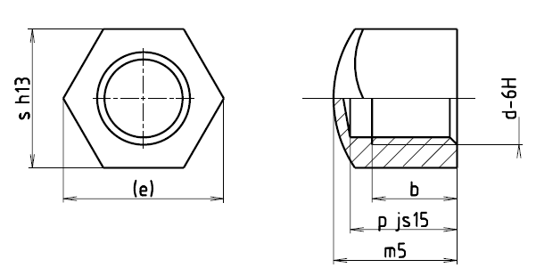

Příklad označení uzavřené matice se závitem M12:
UZAVŘENÁ MATICE ČSN 02 1431.21–M12
| Závit d | M6 | M8 | M10 | M12 | (M14) | M16 | (M18) | M20 | M24 | (M27) | M30 |
|---|---|---|---|---|---|---|---|---|---|---|---|
| M8×1 | M10×1,25 | M12×1,25 | (M14×1,5) | M16×1,5 | (M18×1,5) | M20×1,5 | M24×2 | (M27×2) | M30×2 | ||
| s | 10 | 13 | 16 | 18 | 21 | 24 | 27 | 30 | 36 | 41 | 46 |
| e | 12 | 15 | 18,5 | 20,8 | 24,2 | 27,7 | 31,2 | 34,6 | 41,6 | 47,3 | 53,1 |
| bmin | 7,5 | 11 | 13 | 16 | 18,5 | 22 | 23,5 | 26,5 | 32 | 36 | 40,5 |
| m5 | 13,5 | 16,5 | 21 | 25 | 28,5 | 32 | 36 | 39 | 47 | 51 | 57 |
| k | 6 | 8 | 10 | 12 | 14 | 16 | 18 | 20 | 24 | 27 | 30 |
| p | 13 | 16 | 20 | 24 | 27 | 30 | 34 | 37 | 45 | 49 | 55 |
| Hmotnost [g] | 6,5 | 13 | 26,3 | 38,1 | 58,8 | 80 | 115 | 152 | 263 | 367 | 550 |